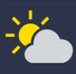
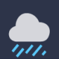
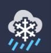

| Today | ||||||||
|---|---|---|---|---|---|---|---|---|
| {% for time in range(0, 24) %} | {{ times[time][11:] }} | {% endfor %}|||||||
| Weather | {% for weather in range(0, 24) %} {% if code[weather] in [0, 1] %}{% elif code[weather] == 2 %} |  | {% elif code[weather] == 3 %}{% elif code[weather] in [45, 48] %} | {% elif code[weather] in [51, 53, 55, 61, 63, 65, 80, 81, 82] %} |  | {% elif code[weather] in [56, 57, 66,67] %} | {% elif code[weather] in [71, 73, 75, 77, 85, 86] %}{% elif code[weather] in [95, 96, 99] %} | {% endif %} {% endfor %} |
| Chance of Precipitaion | {% for chance in range(0, 24) %}{{ forecast["hourly"]["precipitation_probability"][chance] }}% | {% endfor %}|||||||
| Temperature (°C) | {% for temp in range(0, 24) %}{{ forecast["hourly"]["temperature_2m"][temp] }} | {% endfor %}|||||||
| Feels like (°C) | {% for temp in range(0, 24) %}{{ forecast["hourly"]["apparent_temperature"][temp] }} | {% endfor %}|||||||
| Wind Speed (mph) | {% for speed in range(0, 24) %}{{ forecast["hourly"]["wind_speed_10m"][speed] }} | {% endfor %}|||||||
| Humidity | {% for humidity in range(0, 24) %}{{ forecast["hourly"]["wind_speed_10m"][humidity] }}% | {% endfor %}
| {{ days[1] }} | ||||||||
|---|---|---|---|---|---|---|---|---|
| {% for time in range(24, 48) %} | {{ times[time][11:] }} | {% endfor %}|||||||
| Weather | {% for weather in range(24, 48) %} {% if code[weather] in [0, 1] %}{% elif code[weather] == 2 %} | {% elif code[weather] == 3 %} | {% elif code[weather] in [45, 48] %} | {% elif code[weather] in [51, 53, 55, 61, 63, 65, 80, 81, 82] %} | {% elif code[weather] in [56, 57, 66,67] %} | {% elif code[weather] in [71, 73, 75, 77, 85, 86] %} | {% elif code[weather] in [95, 96, 99] %} | {% endif %} {% endfor %} |
| Chance of Precipitaion | {% for chance in range(24, 48) %}{{ forecast["hourly"]["precipitation_probability"][chance] }}% | {% endfor %}|||||||
| Temperature (°C) | {% for temp in range(24, 48) %}{{ forecast["hourly"]["temperature_2m"][temp] }} | {% endfor %}|||||||
| Feels like (°C) | {% for temp in range(24, 48) %}{{ forecast["hourly"]["apparent_temperature"][temp] }} | {% endfor %}|||||||
| Wind Speed (mph) | {% for speed in range(24, 48) %}{{ forecast["hourly"]["wind_speed_10m"][speed] }} | {% endfor %}|||||||
| Humidity | {% for humidity in range(24, 48) %}{{ forecast["hourly"]["wind_speed_10m"][humidity] }}% | {% endfor %}
| {{ days[2] }} | ||||||||
|---|---|---|---|---|---|---|---|---|
| {% for time in range(48, 72) %} | {{ times[time][11:] }} | {% endfor %}|||||||
| Weather | {% for weather in range(48, 72) %} {% if code[weather] in [0, 1] %}{% elif code[weather] == 2 %} | {% elif code[weather] == 3 %} | {% elif code[weather] in [45, 48] %} | {% elif code[weather] in [51, 53, 55, 61, 63, 65, 80, 81, 82] %} | {% elif code[weather] in [56, 57, 66,67] %} | {% elif code[weather] in [71, 73, 75, 77, 85, 86] %} | {% elif code[weather] in [95, 96, 99] %} | {% endif %} {% endfor %} |
| Chance of Precipitaion | {% for chance in range(48, 72) %}{{ forecast["hourly"]["precipitation_probability"][chance] }}% | {% endfor %}|||||||
| Temperature (°C) | {% for temp in range(48, 72) %}{{ forecast["hourly"]["temperature_2m"][temp] }} | {% endfor %}|||||||
| Feels like (°C) | {% for temp in range(48, 72) %}{{ forecast["hourly"]["apparent_temperature"][temp] }} | {% endfor %}|||||||
| Wind Speed (mph) | {% for speed in range(48, 72) %}{{ forecast["hourly"]["wind_speed_10m"][speed] }} | {% endfor %}|||||||
| Humidity | {% for humidity in range(48, 72) %}{{ forecast["hourly"]["wind_speed_10m"][humidity] }}% | {% endfor %}
| {{ days[3] }} | ||||||||
|---|---|---|---|---|---|---|---|---|
| {% for time in range(72, 96) %} | {{ times[time][11:] }} | {% endfor %}|||||||
| Weather | {% for weather in range(72, 96) %} {% if code[weather] in [0, 1] %}{% elif code[weather] == 2 %} | {% elif code[weather] == 3 %} | {% elif code[weather] in [45, 48] %} | {% elif code[weather] in [51, 53, 55, 61, 63, 65, 80, 81, 82] %} | {% elif code[weather] in [56, 57, 66,67] %} | {% elif code[weather] in [71, 73, 75, 77, 85, 86] %} | {% elif code[weather] in [95, 96, 99] %} | {% endif %} {% endfor %} |
| Chance of Precipitaion | {% for chance in range(72, 96) %}{{ forecast["hourly"]["precipitation_probability"][chance] }}% | {% endfor %}|||||||
| Temperature (°C) | {% for temp in range(72, 96) %}{{ forecast["hourly"]["temperature_2m"][temp] }} | {% endfor %}|||||||
| Feels like (°C) | {% for temp in range(72, 96) %}{{ forecast["hourly"]["apparent_temperature"][temp] }} | {% endfor %}|||||||
| Wind Speed (mph) | {% for speed in range(72, 96) %}{{ forecast["hourly"]["wind_speed_10m"][speed] }} | {% endfor %}|||||||
| Humidity | {% for humidity in range(72, 96) %}{{ forecast["hourly"]["wind_speed_10m"][humidity] }}% | {% endfor %}
| {{ days[4] }} | ||||||||
|---|---|---|---|---|---|---|---|---|
| {% for time in range(96, 120) %} | {{ times[time][11:] }} | {% endfor %}|||||||
| Weather | {% for weather in range(96, 120) %} {% if code[weather] in [0, 1] %}{% elif code[weather] == 2 %} | {% elif code[weather] == 3 %} | {% elif code[weather] in [45, 48] %} | {% elif code[weather] in [51, 53, 55, 61, 63, 65, 80, 81, 82] %} | {% elif code[weather] in [56, 57, 66,67] %} | {% elif code[weather] in [71, 73, 75, 77, 85, 86] %} | {% elif code[weather] in [95, 96, 99] %} | {% endif %} {% endfor %} |
| Chance of Precipitaion | {% for chance in range(96, 120) %}{{ forecast["hourly"]["precipitation_probability"][chance] }}% | {% endfor %}|||||||
| Temperature (°C) | {% for temp in range(96, 120) %}{{ forecast["hourly"]["temperature_2m"][temp] }} | {% endfor %}|||||||
| Feels like (°C) | {% for temp in range(96, 120) %}{{ forecast["hourly"]["apparent_temperature"][temp] }} | {% endfor %}|||||||
| Wind Speed (mph) | {% for speed in range(96, 120) %}{{ forecast["hourly"]["wind_speed_10m"][speed] }} | {% endfor %}|||||||
| Humidity | {% for humidity in range(96, 120) %}{{ forecast["hourly"]["wind_speed_10m"][humidity] }}% | {% endfor %}
| {{ days[5] }} | ||||||||
|---|---|---|---|---|---|---|---|---|
| {% for time in range(120, 144) %} | {{ times[time][11:] }} | {% endfor %}|||||||
| Weather | {% for weather in range(120, 144) %} {% if code[weather] in [0, 1] %}{% elif code[weather] == 2 %} | {% elif code[weather] == 3 %} | {% elif code[weather] in [45, 48] %} | {% elif code[weather] in [51, 53, 55, 61, 63, 65, 80, 81, 82] %} | {% elif code[weather] in [56, 57, 66,67] %} | {% elif code[weather] in [71, 73, 75, 77, 85, 86] %} | {% elif code[weather] in [95, 96, 99] %} | {% endif %} {% endfor %} |
| Chance of Precipitaion | {% for chance in range(120, 144) %}{{ forecast["hourly"]["precipitation_probability"][chance] }}% | {% endfor %}|||||||
| Temperature (°C) | {% for temp in range(120, 144) %}{{ forecast["hourly"]["temperature_2m"][temp] }} | {% endfor %}|||||||
| Feels like (°C) | {% for temp in range(120, 144) %}{{ forecast["hourly"]["apparent_temperature"][temp] }} | {% endfor %}|||||||
| Wind Speed (mph) | {% for speed in range(120, 144) %}{{ forecast["hourly"]["wind_speed_10m"][speed] }} | {% endfor %}|||||||
| Humidity | {% for humidity in range(120, 144) %}{{ forecast["hourly"]["wind_speed_10m"][humidity] }}% | {% endfor %}
| {{ days[6] }} | ||||||||
|---|---|---|---|---|---|---|---|---|
| {% for time in range(144, 168) %} | {{ times[time][11:] }} | {% endfor %}|||||||
| Weather | {% for weather in range(144, 168) %} {% if code[weather] in [0, 1] %}{% elif code[weather] == 2 %} | {% elif code[weather] == 3 %} | {% elif code[weather] in [45, 48] %} | {% elif code[weather] in [51, 53, 55, 61, 63, 65, 80, 81, 82] %} | {% elif code[weather] in [56, 57, 66,67] %} | {% elif code[weather] in [71, 73, 75, 77, 85, 86] %} | {% elif code[weather] in [95, 96, 99] %} | {% endif %} {% endfor %} |
| Chance of Precipitaion | {% for chance in range(144, 168) %}{{ forecast["hourly"]["precipitation_probability"][chance] }}% | {% endfor %}|||||||
| Temperature (°C) | {% for temp in range(144, 168) %}{{ forecast["hourly"]["temperature_2m"][temp] }} | {% endfor %}|||||||
| Feels like (°C) | {% for temp in range(144, 168) %}{{ forecast["hourly"]["apparent_temperature"][temp] }} | {% endfor %}|||||||
| Wind Speed (mph) | {% for speed in range(144, 168) %}{{ forecast["hourly"]["wind_speed_10m"][speed] }} | {% endfor %}|||||||
| Humidity | {% for humidity in range(144, 168) %}{{ forecast["hourly"]["wind_speed_10m"][humidity] }}% | {% endfor %}
| Week | |||||||||||||
|---|---|---|---|---|---|---|---|---|---|---|---|---|---|
| Weather | Min Temp (°C) | Max Temp (°C) | Sunrise | Sunset | Sunlight Duration (hours) | ||||||||
| {{ days[i] }} | {% if forecast["daily"]["weather_code"][i] in [0, 1] %}{% elif forecast["daily"]["weather_code"][i] == 2 %} | {% elif forecast["daily"]["weather_code"][i] == 3 %} | {% elif forecast["daily"]["weather_code"][i] in [45, 48] %} | {% elif forecast["daily"]["weather_code"][i] in [51, 53, 55, 61, 63, 65, 80, 81, 82] %} | {% elif forecast["daily"]["weather_code"][i] in [56, 57, 66,67] %} | {% elif forecast["daily"]["weather_code"][i] in [71, 73, 75, 77, 85, 86] %} | {% elif forecast["daily"]["weather_code"][i] in [95, 96, 99] %} | {% endif %} | {{ forecast["daily"]["temperature_2m_min"][i] }} | {{ forecast["daily"]["temperature_2m_max"][i] }} | {{ forecast["daily"]["sunrise"][i][11:] }} | {{ forecast["daily"]["sunset"][i][11:] }} | {{ durations[i] }} |